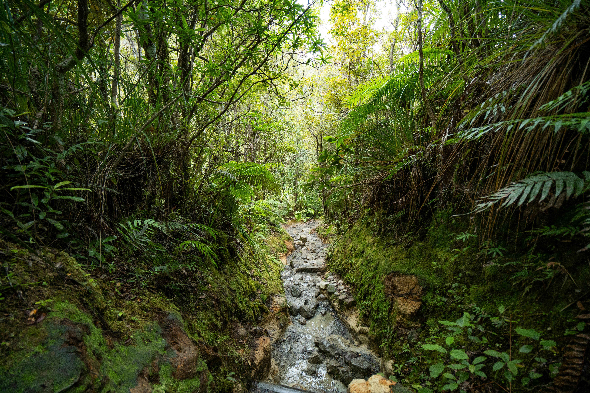
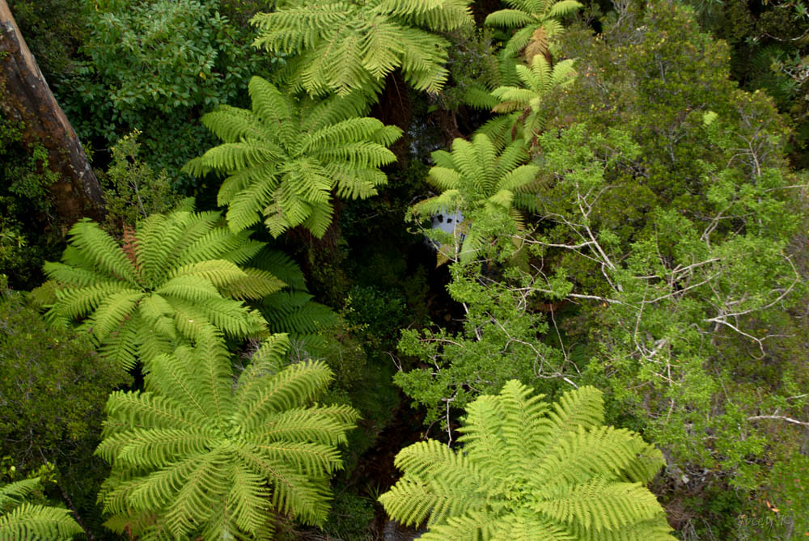
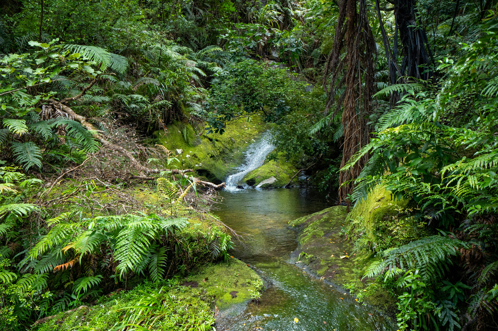
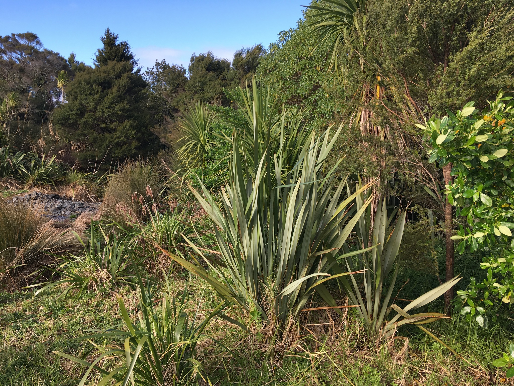

A flat, family-friendly loop through one of Auckland's oldest remnant forests in Northcote. An elevated boardwalk winds past towering pūriri, kahikatea, and tōtara trees, with abundant birdlife — perfect for a quick nature escape.

A stunning out-and-back trail in Northcote, featuring a 60-metre treetop boardwalk perched 18 metres above the ground. Walk among ancient kauri and tānekaha trees, some up to 400 years old.

A hidden gem tucked into central Auckland, winding through mature native bush home to over 160 plant species. Cross a charming stream bridge and keep an eye out for tūī, kererū, and the occasional visiting kākā.

Auckland's North Shore's largest urban forest, weaving through nikau palms, young kauri, and ponga ferns alongside the Kaipatiki Stream. A shady, well-maintained loop ideal for all seasons and abilities.